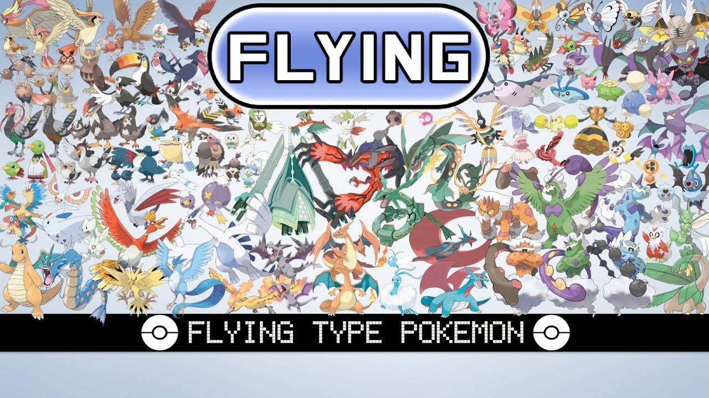

Flying-Type Pokemon
Flying-type Pokémon soar through the skies with grace and majesty, embodying the freedom and boundless expanse of the open air. Renowned for their aerial prowess and diverse abilities, these avian creatures captivate trainers and enthusiasts alike with their stunning designs and impressive capabilities. From the majestic Dragonite to the agile Pidgeot, Flying-types represent a diverse array of species, each with its own unique strengths and characteristics. One of the defining features of Flying-type Pokémon is their ability to take to the skies, granting them unparalleled mobility and maneuverability. With wings spread wide, they navigate the heavens with ease, soaring effortlessly above the earthbound constraints that limit other creatures. This aerial superiority not only allows Flying-types to travel vast distances quickly but also provides them with a strategic advantage in battles, where they can outmaneuver opponents and strike from above with devastating attacks. Furthermore, Flying-type Pokémon showcase a wide range of designs and adaptations, reflecting the rich diversity of avian life in the Pokémon world. From the regal Ho-Oh, whose vibrant plumage symbolizes hope and rebirth, to the sleek and streamlined Skarmory, armored with razor-sharp steel feathers, Flying-types come in all shapes and sizes. This diversity ensures that trainers can find Flying-type Pokémon to suit their preferences and team compositions, whether seeking swift attackers, resilient tanks, or supportive flyers. In addition to their aerial prowess, Flying-type Pokémon often possess secondary typings that further enhance their versatility and utility. Some, like Charizard and Salamence, boast dual Fire typings, combining the power of flames with the freedom of flight to devastating effect. Others, such as Gyarados and Pelipper, wield the dual Water typing, allowing them to dominate both the skies and the seas with equal ease. This dual-typing grants Flying-types access to a wide range of moves and abilities, making them formidable adversaries in battles and invaluable allies to trainers. Beyond their combat capabilities, Flying-type Pokémon play important roles in the ecosystems of the Pokémon world. As masters of the skies, they contribute to the balance of nature by hunting for prey, dispersing seeds, and regulating populations of other flying creatures. Their presence enriches the world around them, adding depth and complexity to the intricate web of life that sustains the Pokémon universe. In conclusion, Flying-type Pokémon stand as symbols of freedom, grace, and power in the Pokémon world. With their ability to soar through the skies, diverse designs, and formidable abilities, they captivate trainers and fans alike with their beauty and strength. Whether soaring through the heavens or battling fiercely on the ground, Flying-types inspire awe and wonder, reminding us of the boundless possibilities that await those who dare to reach for the stars.
